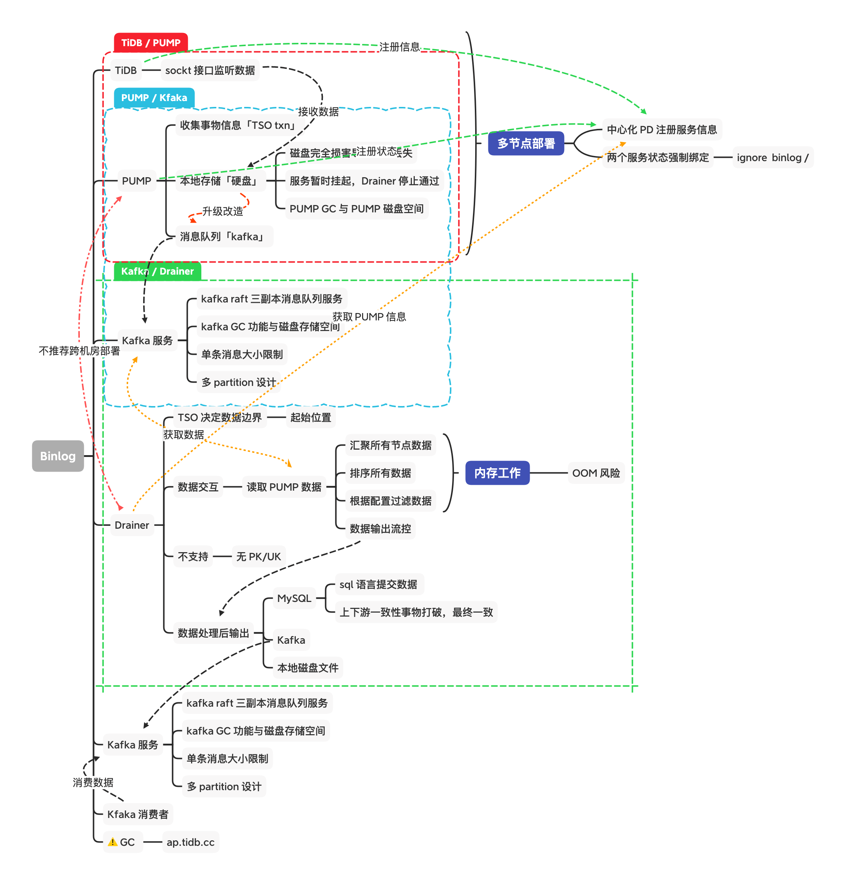
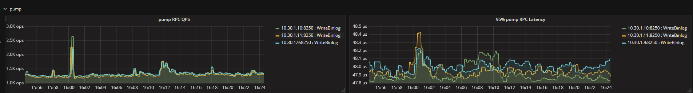
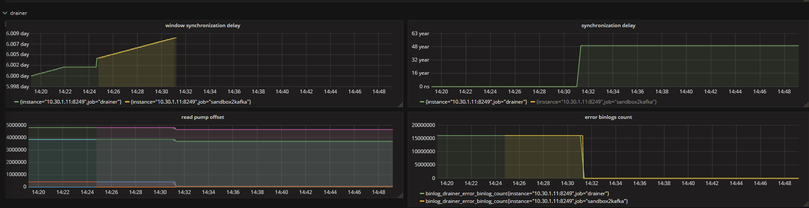
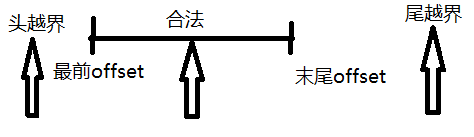
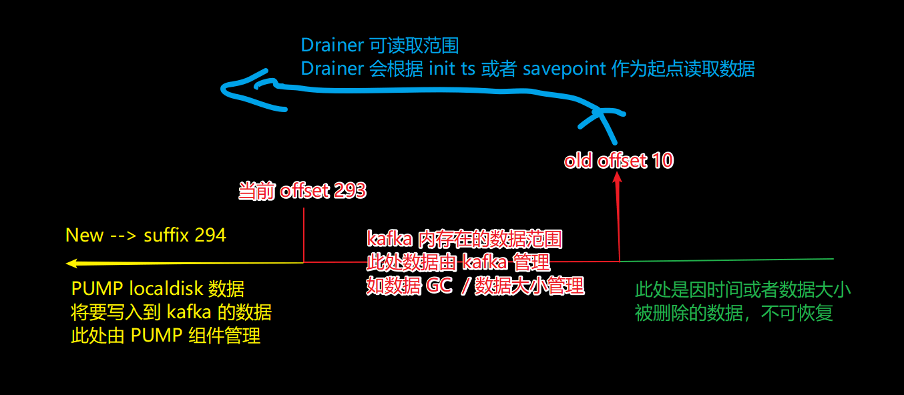
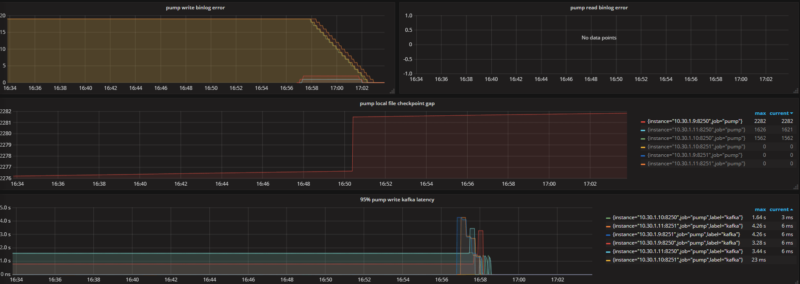
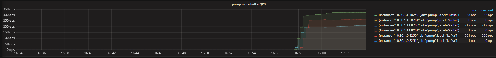

[NOTE] Updated October 29, 2018. This article may have outdated content or subject matter.
0x00 事前
维护该 Binlog 架构下的问题之一 “GC 数据问题”

0x01 FAQ-1
某天巡检发现以下现象，pump 还在工作、Drainer 写入出现中断


查看 Drainer 日志
1
2
3
4
5
6
|
pump.go:433: ESC[0;37m[info] [pump 10-30-1-9:8250] consume from topic 6502327210476397260_10-30-1-9_8250 partition 0 offset 71500ESC[0m
pump.go:436: ESC[0;33m[warning] [pump 10-30-1-9:8250] get consumer partition client error kafka server: The requested offset is outside the range of offsets maintained by the server for the given topic/partition.ESC[0m
pump.go:433: ESC[0;37m[info] [pump 10-30-1-10:8250] consume from topic 6502327210476397260_10-30-1-10_8250 partition 0 offset 4633751ESC[0m
pump.go:436: ESC[0;33m[warning] [pump 10-30-1-10:8250] get consumer partition client error kafka server: The requested offset is outside the range of offsets maintained by the server for the given topic/partition.ESC[0m
pump.go:433: ESC[0;37m[info] [pump 10-30-1-11:8250] consume from topic 6502327210476397260_10-30-1-11_8250 partition 0 offset 3693588ESC[0m
pump.go:436: ESC[0;33m[warning] [pump 10-30-1-11:8250] get consumer partition client error kafka server: The requested offset is outside the range of offsets maintained by the server for the given topic/partition.ESC[0m
|
过程
Drainer 链接 Kafka 获取指定 offset 数据时，发现超出 kafka 内实际数据范围。该现象分头部越界与尾部越界：

造成数据超越界限的情况有两种：
- 人工主动删除 Kafka 内的数据，
- Kafka GC 机制主动删除了过期数据；
- Kafka 配置文件中的 retention 参数控制
- 例如
log.retention.bytes=1024 只保留 1024 个字节，log.retention.hours=1 只保留最近 1 小时数据；
- 如果配置两个参数，任何一个达到阈值都会被 Kafka 执行
Binlog 2.0
Pump 先将数据 Push 到 Kafka；Drainer 读取 Kafka 内的数据进行消费，如果 Kafka 内数据 GC 阈值不合理或者被人工主动删除，会出现以上问题。

按照全量+增量从头再来一遍
0x02 FAQ-2
该条 FAQ 来源于上条 Drainer 重新启动失败
1
2
3
4
5
6
7
8
9
10
11
12
13
14
15
16
17
18
19
20
21
22
23
24
25
26
27
28
29
30
31
32
33
34
35
36
37
38
39
40
41
42
43
44
45
46
47
48
49
50
51
52
53
54
55
56
57
58
59
60
61
62
63
64
|
curl http:// PUMPip:PUMPport/status
curl http://10.30.1.10:8250/status
{
"LatestBinlog": {
"10-30-1-10:8250": {
"file-position": {
"suffix": 297,
"offset": 254175949
},
"kafka-position": {
"offset": 14535476
}
},
"10-30-1-10:8251": {
"file-position": {
"offset": 7939251
},
"kafka-position": {
"offset": 173037
}
},
"10-30-1-11:8250": {
"file-position": {
"suffix": 308,
"offset": 292719018
},
"kafka-position": {
"offset": 13891570
}
},
"10-30-1-11:8251": {
"file-position": {
"offset": 8005580
},
"kafka-position": {
"offset": 172300
}
},
"10-30-1-9:8250": {
"file-position": {
"suffix": 476,
"offset": 466616386
},
"kafka-position": {
"offset": 93158361
}
},
"10-30-1-9:8251": {
"file-position": {
"offset": 8029075
},
"kafka-position": {
"offset": 173146
}
}
},
"CommitTS": 403911906584952955,
"Checkpoint": {
"suffix": 8,
"offset": 143423140
},
"ErrMsg": ""
}
|
- Kafka tools 工具查看 Kafka 消息信息
- PUMP 自动创建的 topic 格式为：
clusterID + 主机名 + 端口
- 例如：
6502327210476397260_10-30-1-10_8250
- 或者使用以下工具获取所有 topic name
1
|
./kafka-topics.sh --list --zookeeper zk.xxxyyy.com:2181
|
综上信息以及监控信息结合判断 PUMP 最新状态是正常的；持续在向 local disk 写入数据
查看日志发现了新的问题
- PUMP 日志提示推送到 Kafka 的消息过大，无法成功写入到 Kafka
1
2
3
4
5
6
7
8
9
10
11
|
kafka_binlogger.go:74: ESC[0;31m[error] write binlog into kafka 13891570 error kafka: Failed to deliver 1 messages.ESC[0m
proxy_binlogger.go:148: ESC[0;31m[error] write binlog to replicate error kafka: Failed to deliver 1 messages. payload length 1918645ESC[0m
proxy_binlogger.go:164: ESC[0;31m[error] master walk error kafka: Failed to deliver 1 messages.
/home/jenkins/workspace/build_tidb_binlog_master/go/src/github.com/pingcap/tidb-binlog/pump/encoder.go:111:
/home/jenkins/workspace/build_tidb_binlog_master/go/src/github.com/pingcap/tidb-binlog/pump/kafka_binlogger.go:80:
/home/jenkins/workspace/build_tidb_binlog_master/go/src/github.com/pingcap/tidb-binlog/pump/proxy_binlogger.go:149:
/home/jenkins/workspace/build_tidb_binlog_master/go/src/github.com/pingcap/tidb-binlog/pump/binlogger.go:336: ESC[0m
binlogger.go:252: ESC[0;37m[info] [binlogger] walk from position {Suffix:7 Offset:480977849}ESC[0m
encoder.go:101: ESC[0;31m[error] [encoder] produce meesage error kafka: Failed to deliver 1 messages.ESC[0m
encoder.go:105: ESC[0;31m[error] [encode] produce message kafka: Failed to produce message to topic 6502327210476397260_10-30-1-11_8250: kafka server: Message was too large, server rejected it to avoid allocation error., now retry No. 1ESC[0m
encoder.go:101: ESC[0;31m[error] [encoder] produce meesage error kafka: Failed to deliver 1 messages.ESC[0m
|
此处检查 kafka 配置文件中的 message.max.bytes=1073741824 参数，目前官方推荐 1073741824 大小
调整后 PUMP 日志显示正在写入数据
0x03 FAQ-3
本条 FAQ 来自上一条中的人工复检：PUMP 本地 Binlog 文件数量核对
检查发现 PUMP 本地磁盘中 Binlog 文件以超过 PUMP GC 阈值但未被 GC 删除
tips：Binlog 2.0 架构中 PUMP 接收到事物数据先存储到本地磁盘，然后推送到 Kafka 后删除本地文件
- 文件创建时间是 10 月 23 日，修复时间是 10 月 29 日，GC 时间参数是 5 天，该文件实际超过了 GC 时间
1
2
3
4
5
6
7
8
9
|
[root@localhost]# stat binlog-0000000000000008-20181023115001
File: ‘binlog-0000000000000008-20181023115001’
Size: 539246691 Blocks: 1053232 IO Block: 4096 regular file
Device: 811h/2065d Inode: 12845065 Links: 1
Access: (0600/-rw-------) Uid: ( 1000/ ops) Gid: ( 1000/ ops)
Access: 2018-10-29 16:58:17.197615887 +0800
Modify: 2018-10-23 11:59:31.930792955 +0800
Change: 2018-10-23 11:59:31.930792955 +0800
Birth: -
|
- 查看 PUMP 日志，提示该文件还未推送到 Kafka 服务
1
2
3
|
binlogger.go:387: [warning] binlog file /data1/deploy/data.pump/clusters/6502327210476397260/binlog-0000000000000043-20181024160016 is already reach the gc time, but data is not send to kafka, position is {8 142486881}
binlogger.go:387: [warning] binlog file /data1/deploy/data.pump/clusters/6502327210476397260/binlog-0000000000000044-20181024162025 is already reach the gc time, but data is not send to kafka, position is {8 142486881}
binlogger.go:387: [warning] binlog file /data1/deploy/data.pump/clusters/6502327210476397260/binlog-0000000000000045-20181024163951 is already reach the gc time, but data is not send to kafka, position is {8 142486881}
|
以上场景在修复 kafka message size 之后逐渐恢复正常
0x04 撒花
观察监控 ing


小结
-
PUMP 长时间写数据到 Kafka 失败，未能及时告警发现
- 写入失败原因是 Kafka
message.max.bytes 参数太小，binlog 数据写入失败
1
2
3
4
5
6
7
8
|
# 在 kafka 的文件 server.properties 中检查如下三个个配置项
#broker 能接收消息的最大字节数
message.max.bytes=1073741824
#broker 可复制的消息的最大字节数
replica.fetch.max.bytes=1073741824
# 消费者端的可读取的最大消息
fetch.message.max.bytes=1073741824
|
-
Drainer 启动时出现指定 TSO 信息超出 Kafka topic 范围；没有 Kafka 监控，未能及时判定 Drainer 需要读取的数据是否存在
-
Drainer 需要等待启动原因是 PUMP 目前正在推送 binlog 数据到 Kafka ，Drainer 后续要去 Kafka 内读取
- 如果 Drainer 现在要立即启动，只能指定 10 月 23 日 的 commit-ts 信息，因为目前 Kafka 内数据范围是从 10 月 23 日 开始的
Author
Jeff
LastMod
2018-10-29
License
CC BY-NC-ND 4.0 ｜ 本文不带任何官方色彩，最终解释权归本站所有